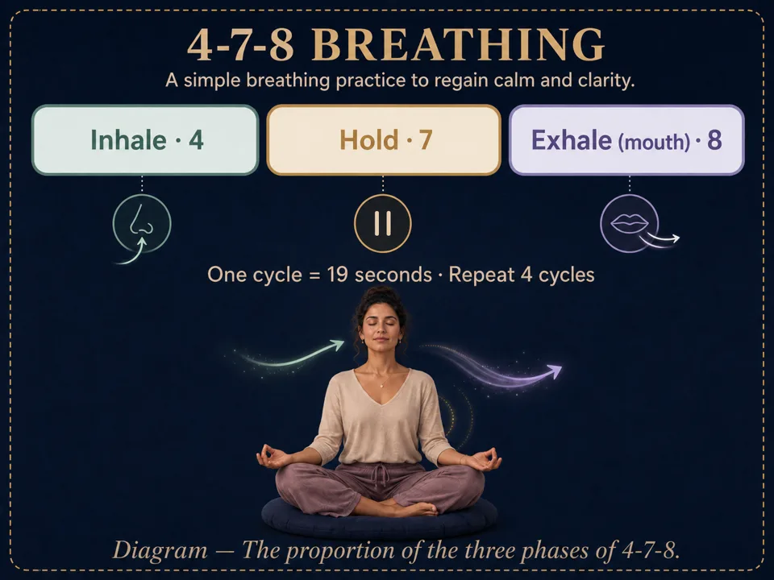

Guided sleep meditation: fall asleep more easily
Why sleep runs away when you chase it, the evening posture, 4-7-8 breathing, and how a guided sleep meditation actually works.
A sleep meditation doesn't force you to sleep: it gently occupies the mind until it lets go on its own. Lying posture, 4-7-8 breathing, the evening body scan, the 3 a.m. wake-up: here's how to fall asleep more easily, starting tonight.
Why sleep runs away when you chase it
You turn off the light — and that's exactly when the mind turns on: the day replays, tomorrow's list writes itself, one sentence from noon loops endlessly. The harder you try to sleep, the further it recedes — because trying is a waking state.
Sleep meditation takes the opposite road: it doesn't chase sleep, it prepares the conditions where sleep arrives on its own. You give attention one simple object — the breath, the body's sensations, a calm voice — and the mind, no longer alone on stage, lowers the curtain.
The evening posture: lying down, at last
Everywhere else in meditation, falling asleep is an obstacle. Here, it's the triumphant exit. Lying down — savasana — becomes the royal posture of the evening:

- On your back, arms alongside the body, palms up.
- A thin pillow under the head; another under the knees if the lower back pulls.
- In bed, under the covers: the one context where meditating in bed is recommended — you won't have to move when sleep arrives.
The breathing that puts you to sleep: 4-7-8
Of all breathing techniques, 4-7-8 is the sleep one: inhale for 4, hold for 7, exhale slowly for 8. The long exhale does the work — it slows the heart rate and tells the body the night can begin.

- First exhale completely, through the mouth.
- Inhale through the nose for a count of 4.
- Hold for a count of 7 — without tensing the shoulders.
- Exhale slowly through the mouth for a count of 8, like one long sigh.
- Repeat 4 to 8 cycles, then let the breath return to normal.
How a guided sleep meditation works
A guided sleep meditation does exactly what the mind refuses to do alone at night: it gently occupies attention. The voice travels the body region by region — the evening body scan —, offers calm imagery, slows its own sentences, and leaves longer and longer silences. There is nothing to achieve: just follow, and let yourself be left behind.
Choosing well
- Length: 10 to 20 minutes is enough — sleep often arrives before the end.
- Voice: pick the one that lulls you, at a slow speed.
- The ending: a session that closes in silence — no end music, no chime.
In Awakening Minds, the whole Body, Calm & Sleep category is written for this: guided sleep meditations, slowly narrated, ending in silence — plus a dream journal for the morning. The app is free, with no subscription, and everything plays offline, in the dark, phone face-down on the nightstand.
The 3 a.m. wake-up
Waking during the night is normal — falling back asleep is what can be trained. Three rules help:
- No screen, no clock. Checking the time starts the mental math ("3 h 40 left…") — exactly what to avoid.
- Return to the body, not the thoughts. A slow body scan from the feet up, or a few long-exhale cycles.
- If restlessness wins: a gentle guided meditation in earphones beats forty minutes of struggling in the dark.
Frequently asked questions
Is it okay to fall asleep during a guided meditation?
At night, that's the whole point: sleep meditations are written to be left mid-way. Pick a session that ends in silence, and let the voice carry on without you.
How long before it works?
The body relaxes from the very first session; falling asleep faster usually settles in after one or two weeks of regular practice, at the same time each night.
Earphones or speaker?
Both work. A speaker at low volume saves you from removing earphones as sleep arrives; a single earphone is a good compromise if you share the room.
Rather practice than read?
Everything in this article can be practiced in Awakening Minds, a free meditation app: 150 guided meditations — sleep, breathing, immersive worlds — no subscription, no ads, no account, and fully offline.
✦ Discover the free appRead next
How to start meditating: a beginner’s guide
What meditation actually is, why it's worth starting, and the 5 myths that block beginners. A simple, free guide to your first meditation.
Meditation posture: 4 positions that actually work
Chair, cross-legged, seiza or lying down: the 4 meditation positions with diagrams, and the 7 points of a dignified, relaxed posture.